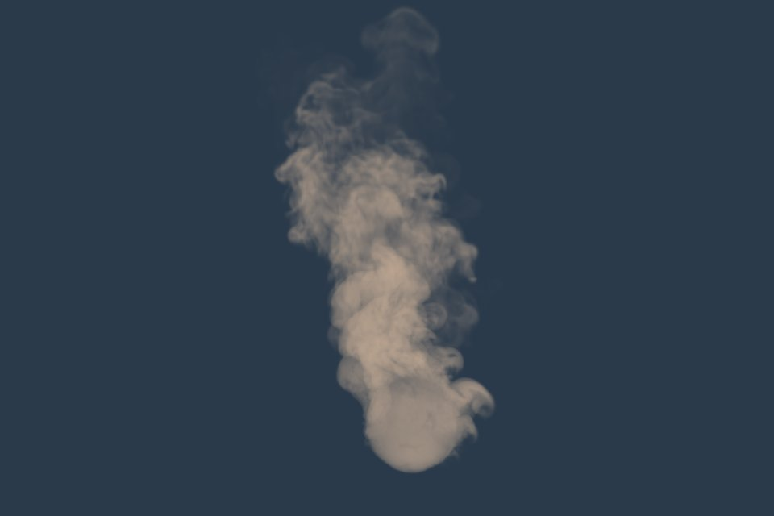
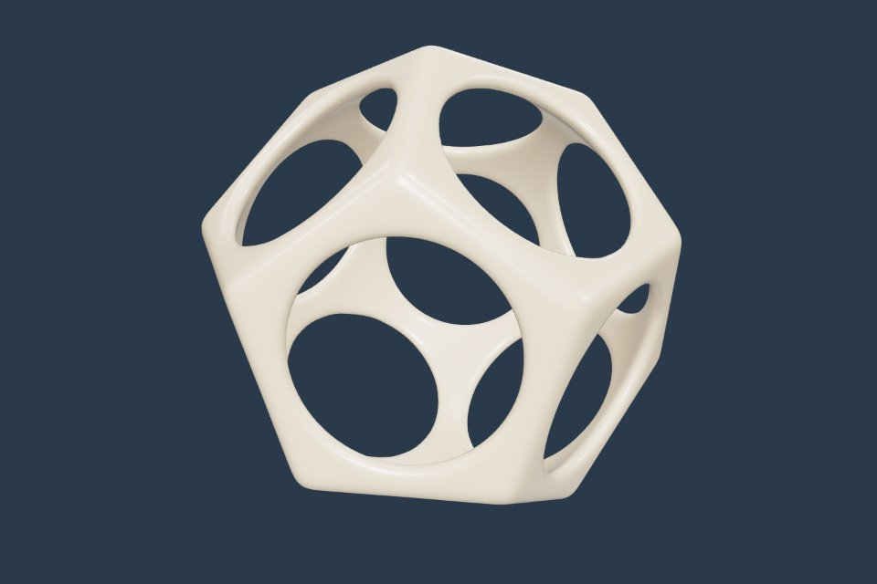
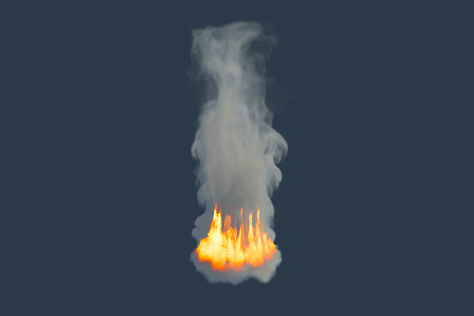

three-vdb-loader
OpenVDB and NanoVDB for three.js: a loader, an exporter and level set meshing. GitHub | npm
animation
A 192 frame NanoVDB fire simulation, streamed and decoded in web workers while it plays. VDBSequenceLoader

volumes
Single OpenVDB files raymarched from 3D textures: a torus knot, the openvdb.org smoke, fire and velocity. VDBLoader

surfaces
Level sets and fog volume isosurfaces turned into meshes with marching cubes. createSurfaceGeometry

three.js webgpu_loader_vdb
The official three.js example, which streams the same fire sequence with this package and renders it with WebGPU.